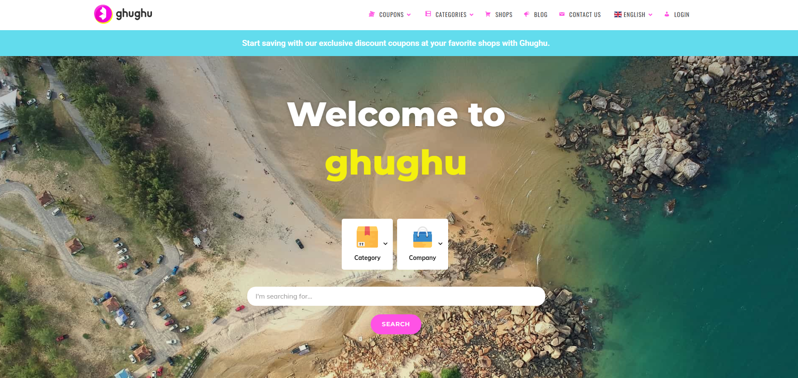
Ghughu
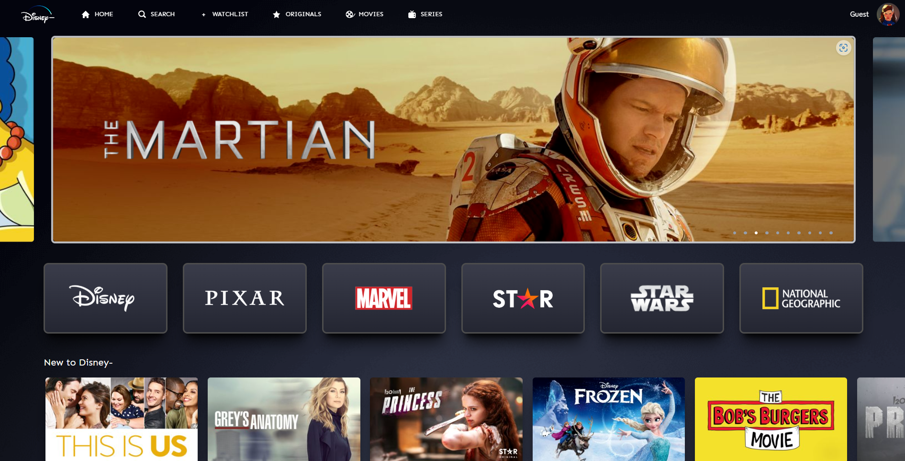
Disney-
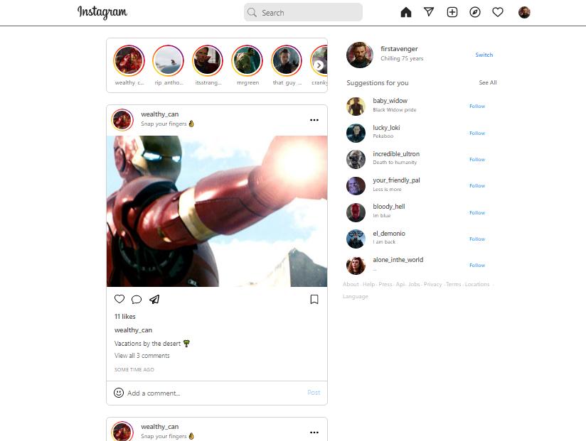
Fakestagram
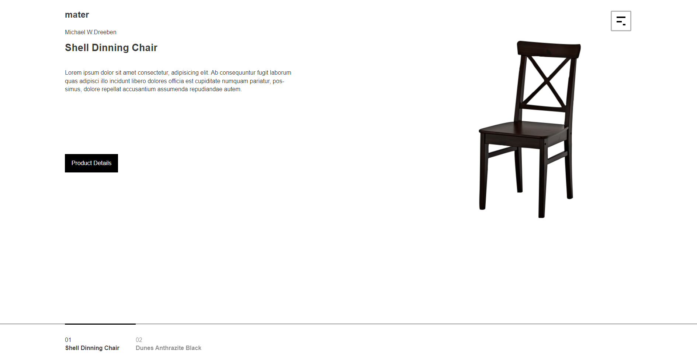
Alexion Test
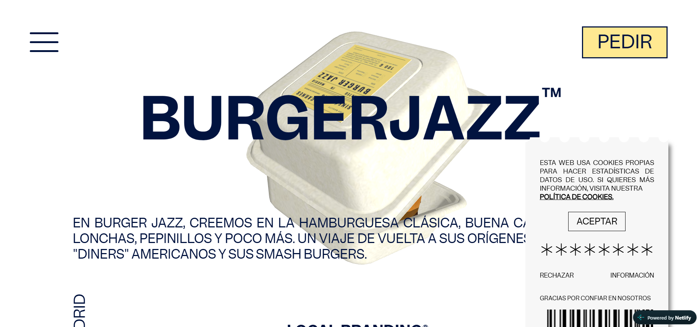
Burger Jazz
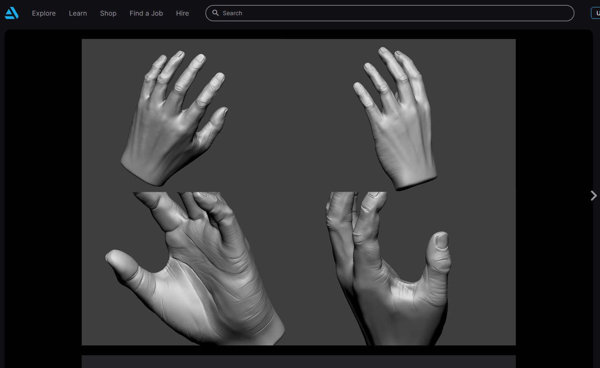
Gleechi Hands
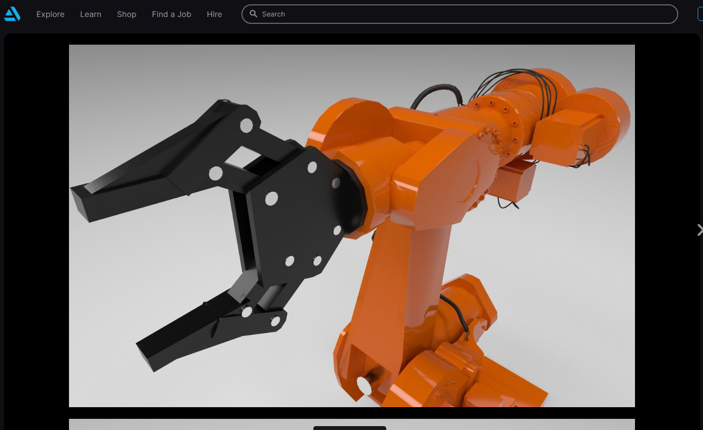
Gleechi Robot Clasp
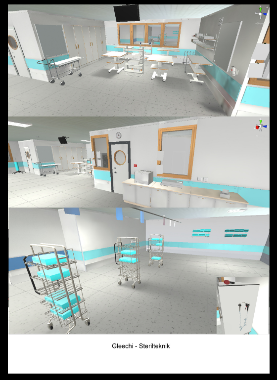
Gleechi Sterilteknik
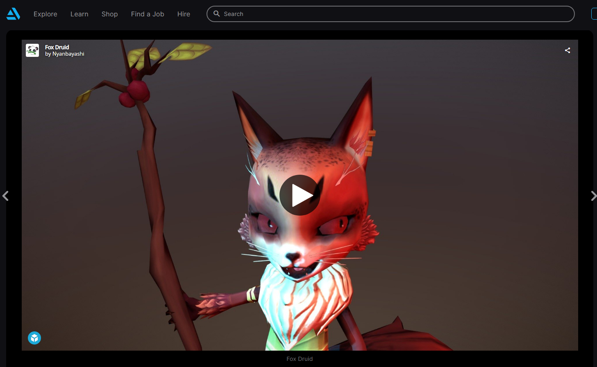
Fox Druid Test
Ghughu
Ghughu is a professional website originally built with WordPress, PHP and JavaScript. During my six-month period working with Arkeero, I contributed to its migration by helping recreate the website using Laravel, a PHP framework I learned specifically for the project. This experience challenged me to learn a new technology quickly and apply it to an existing website, while adapting to an established project and its requirements.
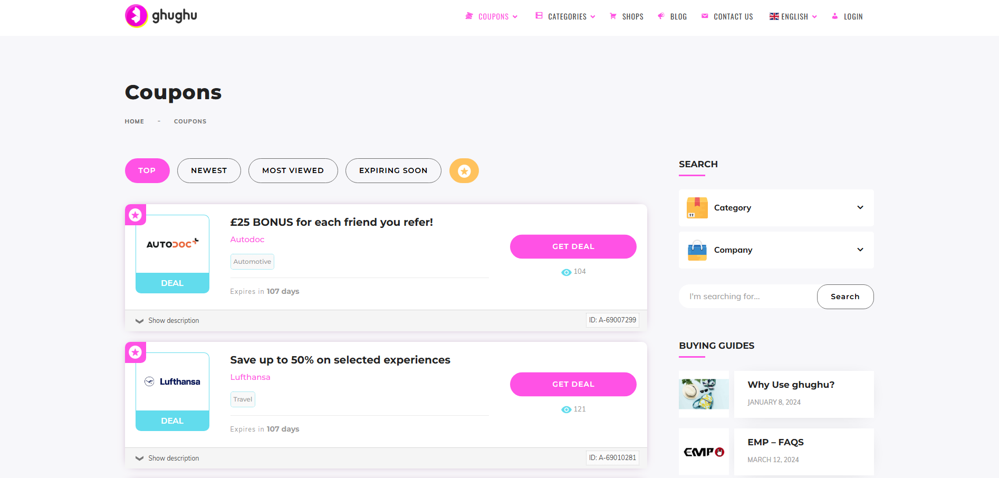
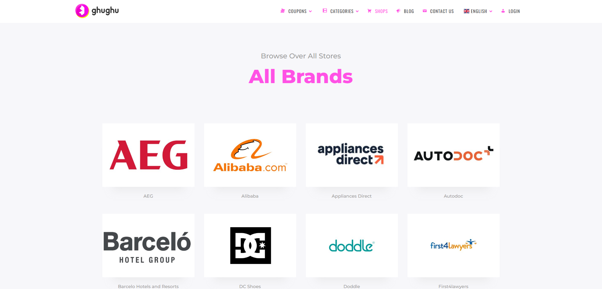
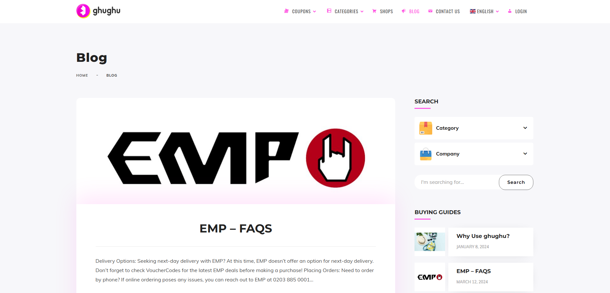
Alongside the website migration, I worked on producing HTML email layouts for different clients. The workload involved thousands of companies and several hundred email layouts each week. This required me to work efficiently with HTML, maintain consistency across layouts and pay attention to how email content was structured and presented.
Disney -
Disney - is a personal training project built with Angular to practise front-end development and create a website inspired by Disney's film catalogue. I spent several weeks refining the visual presentation and building a database by collecting and organising the information myself. The database was hosted on Heroku, and the website was deployed using Netlify. This project allowed me to combine interface development with data organisation and deployment, while learning how the different parts of a web application work together.


Here is a video of the functional website (except the movie player):
Disclaimer: I do not own Disney, the different movies displayed nor the images used. The project is entirely meant to be displayed as skill showcase.
Fakestagram
Fakestagram is a training project developed with ReactJS that reimagines a social media platform through a playful concept: Marvel superheroes as social media personalities. I spent approximately a week studying the visual style and mobile layout of social media websites before adapting those ideas into my own interface. The project gave me an opportunity to practise building a web experience with React while exploring how a familiar digital format could be redesigned around a creative theme. I deployed the finished project using Netlify.


Here is a video of the functional website:
Disclaimer: I do not own Marvel, the different Superheroes displayed nor the images used. The project is entirely meant to be displayed as skill showcase.
Alexion Test
Alexion is a biotechnology company, and this project was a website-recreation test developed using ReactJS. The task was to reproduce the appearance and behaviour of a reference website using supplied images and a video demonstrating how the original interface worked. Rather than relying on access to the original source code, I had to interpret the visual references and translate them into a working implementation. The finished project was deployed using Netlify and can be explored here: Alexion Test. This exercise strengthened my attention to visual detail and my ability to recreate an interface from reference material.

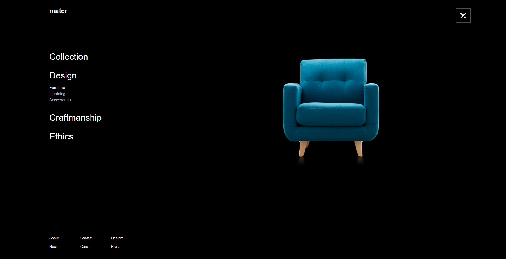
Here is a video of the functional website:
Burger Jazz
Burger Jazz is a restaurant brand based in Spain, with locations in Madrid and Barcelona. I worked directly with the restaurant owner and their assistant to develop a custom website from scratch. Built with ReactJS and Three.js, the project combined web development with interactive 3D graphics. Over several months, we explored and revised the design, refined the mobile experience and worked to find a suitable hosting solution. The project required balancing the client's vision with technical implementation and responsive design. Although the website was not ultimately put into use, it remains an important portfolio project showcasing my ability to combine front-end development, creative design and 3D web technology. The project was deployed using Netlify: Burger Jazz.
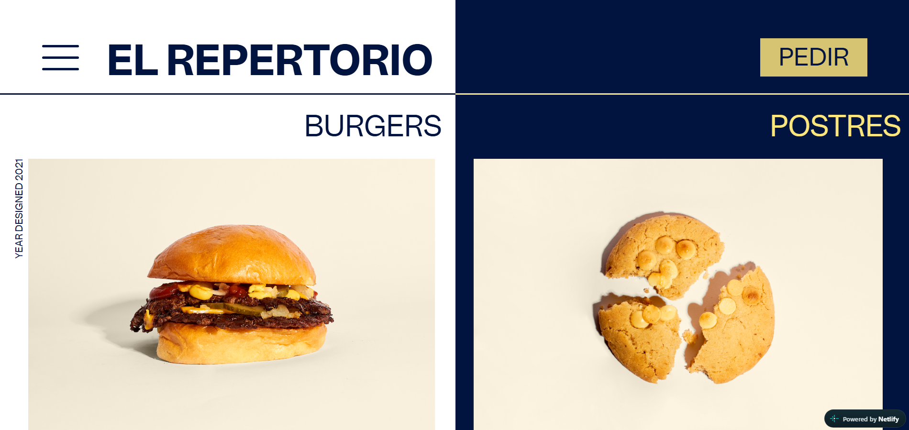
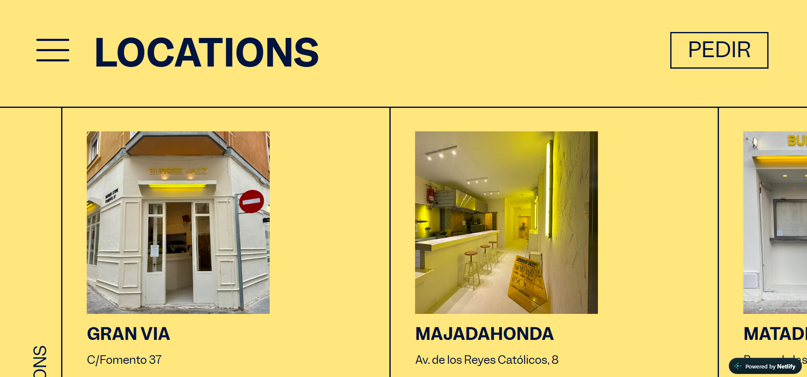
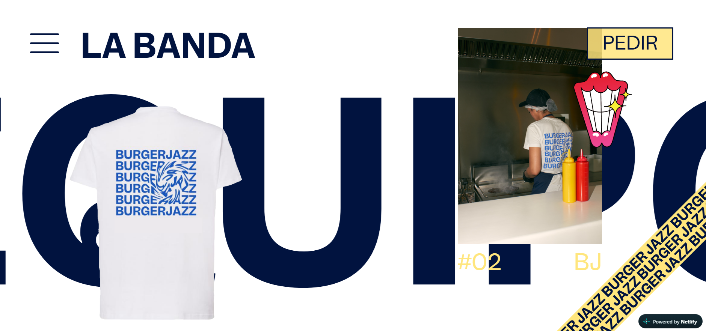
Disclaimer: I do not own the current official Burger Jazz website nor I am linked to the company anymore. The project is kept entirely to be displayed as a skill showcase.
Gleechi Hands
Gleechi is a Swedish company that develops virtual reality training solutions. During my six-month period working with the company, I created a detailed 3D hand model intended for use in its projects. I sculpted the model in ZBrush, carried out retopology and UV mapping, and recreated the materials in 3ds Max before texturing the model in Substance 3D Painter. The workflow required me to move between sculpting, preparing the model's topology and UVs, and developing its final surface appearance. The model is still in use by the company, making this a practical example of my 3D production work being applied beyond a personal portfolio.
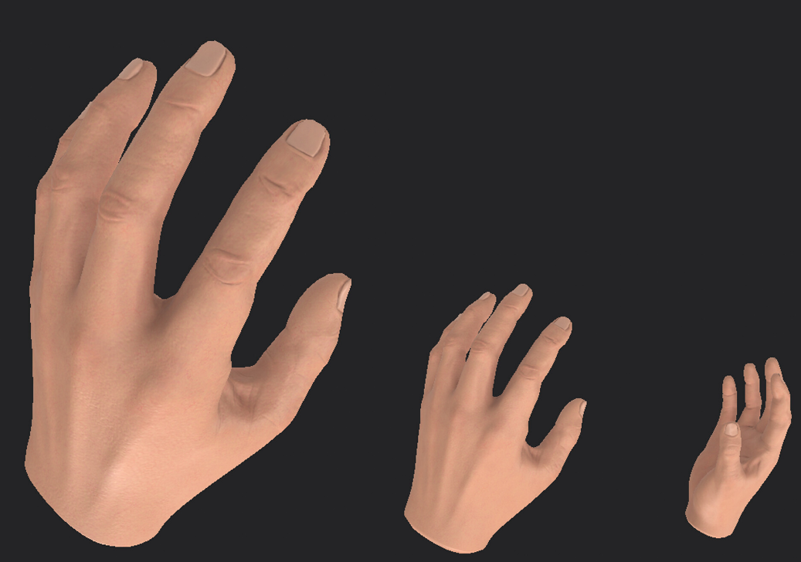
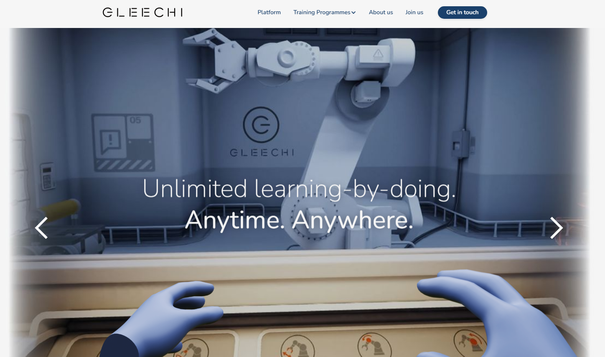
Gleechi Robot Clasp
Gleechi develops virtual reality training solutions, and this robotic tool-clasp model was created during my six-month period working with the company. I modelled the asset for use in a professional project, completing retopology and UV mapping in 3ds Max and creating its textures in Adobe Photoshop. The work involved preparing the model's geometry and UV layout before developing its final visual appearance. The asset is still in use by the company, demonstrating how 3D modelling and texturing skills can contribute to an ongoing production workflow.
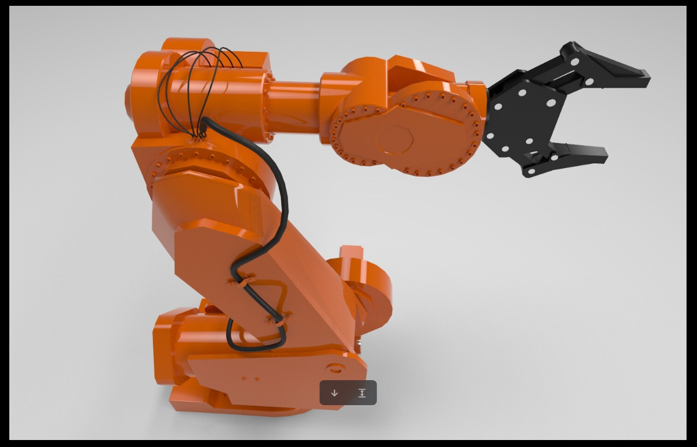
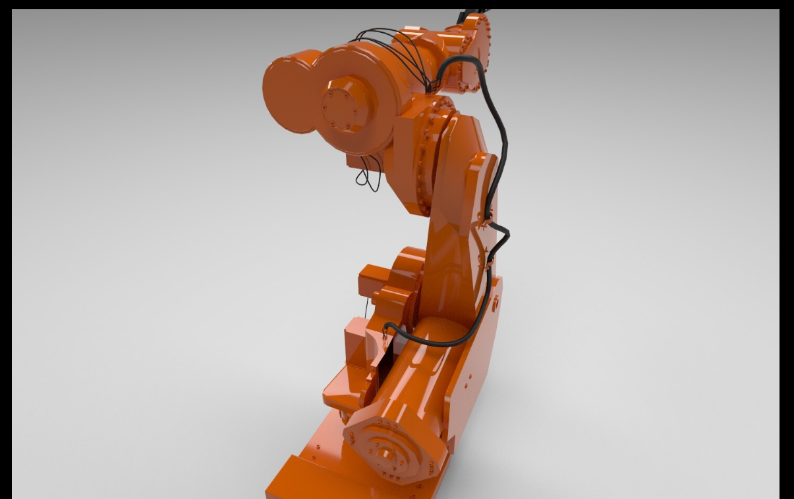
Gleechi Sterilteknik Lab
Gleechi develops virtual reality training solutions, including projects that represent professional working environments. During my six-month period working with the company, I created a 3D model of a sterilisation laboratory environment for the Sterilteknik project. My work included environment modelling, retopology and UV mapping, as well as cleaning up the topology of several 3D-scanned CAD machine models in 3ds Max. I also worked on texturing with Adobe Photoshop. This project brought together environment creation and the preparation of scanned technical assets, helping turn real-world equipment and spaces into usable 3D content. The models are still in use by the company.
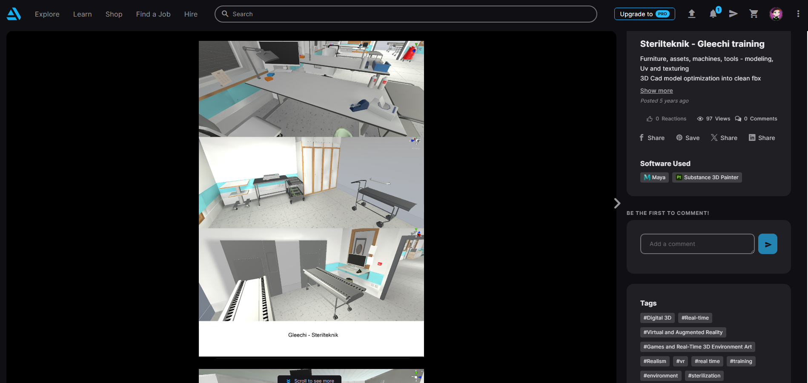
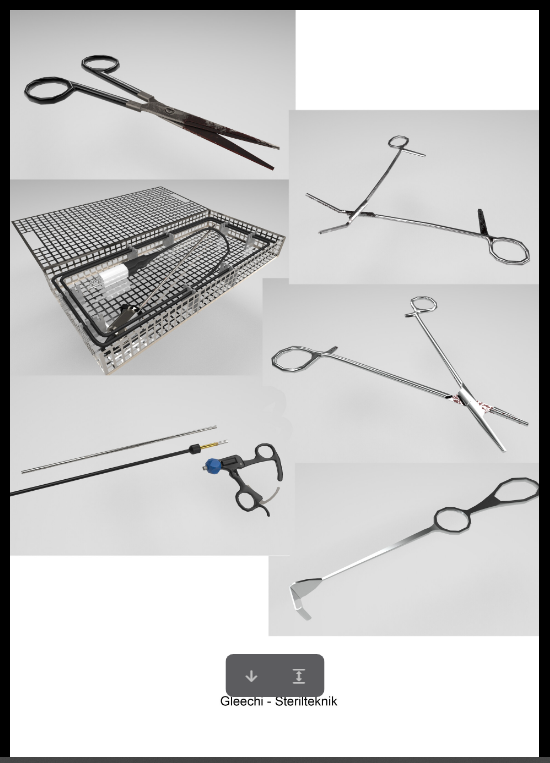
Innogames test - Fox Druid
InnoGames is a video game developer, and the Fox Druid project was an art test I completed as part of a job application. The task was to transform a supplied concept-art image into a fully game-ready 3D character model. I used ZBrush for sculpting, Autodesk Maya for retopology and UV mapping, and Substance 3D Painter for texturing. The project required me to interpret a 2D design and translate it into a three-dimensional asset while preparing its geometry, UVs and textures for a game-art workflow. It demonstrates my ability to work across several stages of character production and adapt my skills to a specific creative brief.
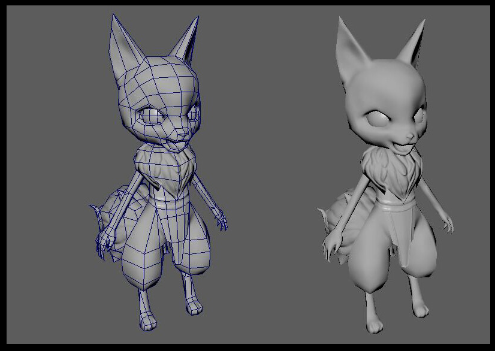
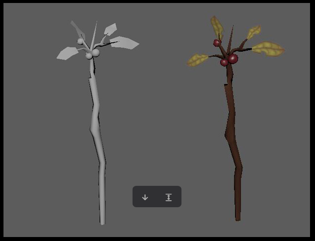
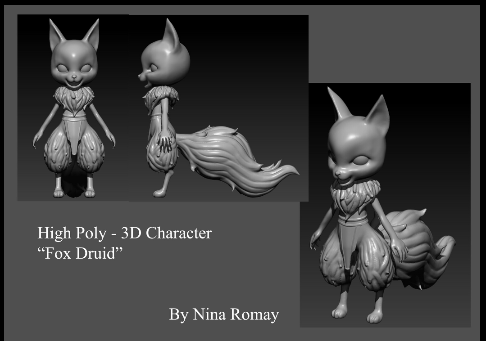
Click on the image to check out the 3D model: